原文连接:https://www.cnblogs.com/yixinjishu/p/12096496.html
一、应用服务架构演进及微服务架构介绍
1.1 应用架构的演进历程
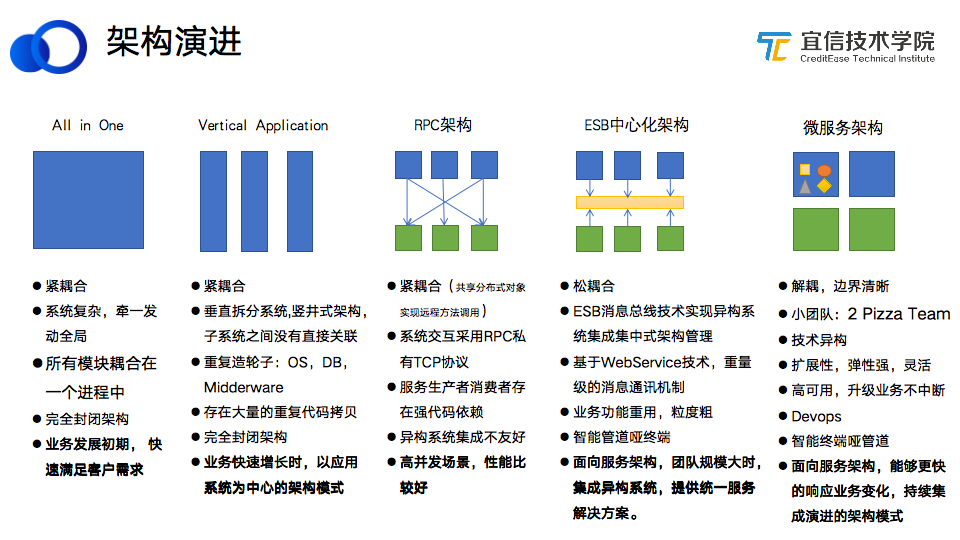
应用服务架构一直处于不断演进的过程中，上图通过对比5种比较主流的架构模式，展示应用架构的演进历程和变化。
- 单体架构（All in One）。在业务发展初期，为了快速落地应用，满足客户需求，一般会使用All in One的单体架构。单体架构的特点是：所有模块都耦合在一个进程里，系统完全封闭且很复杂，牵一发动全局。
- 竖井式架构（Vertical Application）。随着业务的增长，单体架构越来越臃肿，我们对系统做了垂直化的拆分，应用架构进入第二阶段即竖井式架构。竖井式架构，就是根据业务属性将一个大的单体拆分成一些不同的模块或子系统，子系统之间没有直接关联。竖井式架构依然存在紧耦合的问题，系统也是完全封闭的，且存在大量的重复代码拷贝及模块功能需大量重复造轮子的情况。
单体架构和竖井式架构都是围绕web容器打包及部署的架构模式，随着业务的快速发展，要求实现服务的快速迭代和快速交付，应用架构也由此演进为以服务为中心的架构模式。主流的面向服务的架构模式有：RPC架构、ESB中心化架构和微服务架构。
- RPC架构。RPC架构在现在的应用系统中还是比较常见的架构模式，适用于高并发场景，性能比较好。Dubbo就是一个典型的RPC架构。RPC架构也存在一些问题：通过共享分布式对象实现远程方法调用，如果在其中一个对象里添加一个属性，就会对共享对象的生产者与消费者产生影响，所以RPC架构也是紧耦合的模式，系统交互采用RPC私有TCP协议，服务生产者和消费者存在强代码依赖，异构系统集成不友好。
- ESB中心化架构。ESB中心化架构实现了松耦合，依赖于ESB消息总线技术实现异构系统的信息交互和集成集中式架构管理，因此它虽然是面向服务的，但它本质上依旧是一个中心化的架构。其优势在于：基于WebService技术，重量级的消息通讯机制，我们称之为“智能管道哑终端”，当团队规模比较大、要实现异构系统集成时，它可以提供统一的解决方案和技术实现方式，快速集成异构系统对外服务。ESB中心化架构的问题也比较明显：中心化架构难以满足灵活性的服务迭代和需求交付。
- 微服务架构。微服务架构实现了系统解耦和持续集成，有清晰的服务边界，粒度相对ESB架构和传统SOA架构来说更小，使用轻量级的通讯机制交互，具备更强的扩展性和弹性，能够更灵活、更快响应业务变化。
通过上述对比，我们不难发现，应用服务架构是在不断演进的，而且其演进背后存在一定的逻辑，服务架构的演进主要取决于以下2个维度：
- 业务维度，技术架构是由业务发展所处的时期和阶段决定的，技术架构要能够解决业务发展过程中的痛点。在进行架构选型时，需要考虑这个架构是否能满足当前业务的需求，业务需求能否随着架构的演进实现增量式的迭代。
- 技术维度，一方面要满足非功能需求，使得业务快速跟上技术生态的发展；另一方面出于商业的技术考量，比如去IOE、 去V、 采用开源的技术解决方案的需求，逐渐完成服务底层使用的商业软件的技术隔离，满足业务快速交付。
1.2 微服务架构的定义
关于微服务的定义，此处引用ThoughtWorks首席科学家Martin Fowler给出的描述。
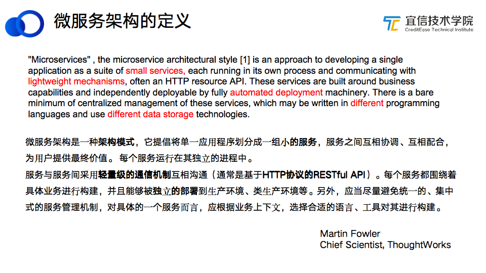
其中以下特性值得特别注意：
- 微服务架构是一种架构模式，提倡将单⼀应⽤程序划分成⼀组⼩的服务。
- 服务之间采用轻量级的通信机制。
- 服务可以独立部署。
- 应当尽量避免统⼀的、集中式的服务管理机制。
- 具体的⼀个服务可以选择合适的语⾔、⼯具对其进⾏构建。
Martin Fowler对于微服务架构的表述更偏向学术上的定义，没有给出明确的落地标准或规范，只是提供了一些构建微服务架构的原则。
1）面向开发者和业务实现
- 拆分成粒度小的服务。
- 各自独立的进程实现服务运行隔离。
- 服务运行通过轻量级的基于HTTP协议的RESTful API的通信机制进行。
- 服务关注围绕业务领域之上构建。
2）面向服务的交付和运维
- 在服务交付方式上，强调可独立部署。
- 支持去中心化的设计，服务一般不需要集中化的管理。
1.3 如何筛选微服务
微服务架构模式有如此多的优点，那是不是所有的业务都要采用这种架构模式呢？又该如何筛选微服务？
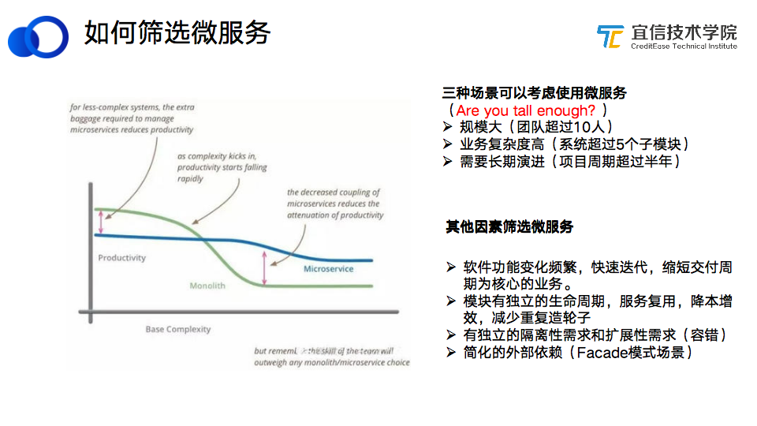
左边图中，横坐标代表系统复杂度、纵坐标代表开发生产力、蓝色线表示微服务架构、绿色线表示单体架构。由图可知，当项目复杂度较低时，单体架构的生产力更高；随着项目复杂度越来越高，单体架构的生产力逐渐下降，微服务架构的生产力则显著提高。
1）3种场景可以考虑使用微服务（Are you tall enough? ）
- 规模大，团队超过10人。
- 业务复杂度高，系统超过5个子模块。
- 需要长期演进，项目周期超过半年。
2）其他因素筛选微服务
- 软件功能变化频繁，以快速迭代、缩短交付周期为核心的业务。
- 模块有独立的生命周期，微服务强调服务复用，减少重复造轮子，实现降本增效。
- 有独立的隔离性需求和扩展性需求（容错）。
- 简化的外部依赖。比如Facade模式场景，后端系统使用统一的对外暴露的形式提供服务。
1.4 如何拆分构建微服务
鉴别出哪些业务需要使用微服务架构模式后，需要决定如何拆分和构建微服务。
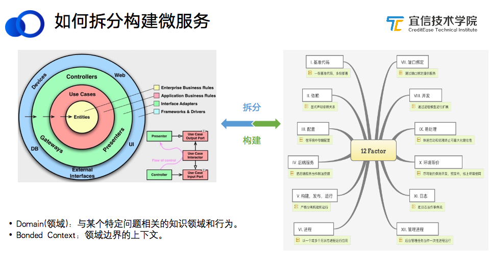
1）服务拆分
如何进行服务拆分，是在微服务过程中业务方经常会问到的问题。
其实很多团队已经开始在做一些微服务化的工作，比如把大的工程拆分成不同的模块或子系统，这种对业务模块进行的静态划分，相当于已经完成了微服务改造的第一步拆分。
上图是DDD（领域驱动设计）的开发模式，如果业务方案已经确定采用微服务的架构模式，在整个工程领域我们倾向于使用DDD模式来对业务架构和服务进行拆分。
DDD是基于领域模型的建模而不是数据库表驱动的建模，需要我们对业务领域有深刻的洞察，了解服务的边界和上下文信息传递。
康威定律指出：在微服务架构和设计系统组织，其产生的设计等价于组织间的沟通结构。就是说微服务架构不仅是技术上的演进，同时对使用技术的组织提出了要求，拆分的服务是我们和服务之间的沟通方式。
2）微服务构建
我们采用微服务的12因子作为微服务建设的架构原则。微服务的12因子也叫云原生12因子，它提供了一种业务上云或微服务改造的最佳实践。重点介绍其中几个因子：
- 基准代码，建议项目使用一份基准代码、多份部署。项目在拆分时可能会存在多份基准代码，造成大量重复性的不同版本的代码共存的现象。在进行微服务构建时，需要把公共服务和公共代码抽取出来，统一支撑不同版本的业务。
- 显式依赖，显式声明依赖关系。对于 Java 程序，在 Gradle 或者Maven中写明依赖关系；
- 配置，在环境中存储配置。根据当前的环境变量决定使用什么样的配置文件。
- 后端服务，把后端服务当成一个附加资源。
- 构建、发布、运行的分离机制，强调服务和构建在运行时，不可以直接修改运行中的代码，而是需要通过构建发布流程统一发布。
- 无状态进程，以一个或多个无状态的进程运行应用。
1.5 微服务架构2种建设思路
微服务看起来非常好，但其实是需要一个技术体系或平台体系来支撑的，如果没有这样一个服务架构平台体系的建设，不推荐使用微服务。
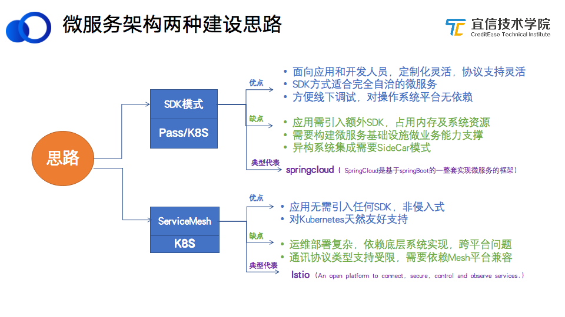
微服务架构建设分为2种思路：SDK模式、ServiceMesh模式。
1）SDK模式
典型代表是SpringCloud，SpringCloud是基于SpringBoot的一整套实现微服务的框架。SDK模式的底层运行平台可以是PaaS平台，也可以是Kuberneters平台或Docker容器。
- 优势：面向应用和开发人员，定制化、协议支持灵活，适合完全自治的服务状态，方便线下调试，对操作系统平台无依赖。
- 缺点：应用需引入额外SDK依赖包，SDK本身占用内存及系统资源，对业务是侵入性的；需要构建微服务基础设施做业务能力支撑；需要使用SideCar模式实现异构系统集成。
2）ServiceMesh模式
Istio 是ServiceMesh模式的典型代表。ServiceMesh模式的优缺点与SDK模式正好相反。
- 优势：不需要额外引入SDK依赖包，对应用无侵入，且对Kubernetes天然友好支持。
- 缺点：部署比较复杂，对底层系统有一定的依赖；通讯协议类型支持受限，需要依赖Mesh平台兼容。
二、SpringCloud微服务生态体系介绍
SpringCloud是基于SpringBoot发展而来的一整套成熟的微服务架构解决方案。SpringCloud具有以下优势：
- 面向开发者，以开发者为中心，开发者生态友好。
- 以Java技术栈为主要开发语言，代码可复用，微服务转型成本低。
- 基础设施完备，提供端到端的微服务架构解决方案。
- 有很多大厂做背书，如Pivital、Netflix,、alibaba等公司都是其生态和源代码贡献者，技术经历过大规模商业应用的考验。
2.1 SpringCloud的技术生态
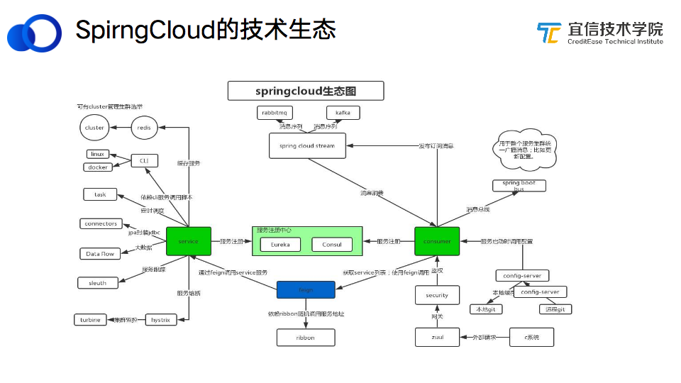
SpringCloud本身也是一个逐渐演进的架构模式：最早是基于IOC/AOP的编程思想产生的；然后在Spring的基础上发展出SpringBoot，基于注解的方式实现快速的应用开发；后来在SpringBoot的基础上开发出SpringCloud底层微服务构架。
上图展示了SpringCloud的技术生态，SpringCloud技术栈包含了很多技术模块，比如Ribbon、Zuul、Eureka、SpringCloud Stream等，这些技术模块共同组成了SpringCloud生态圈，为开发者提供丰富的微服务架构基础设施支撑。
2.2 微服务和SpirngCloud架构的复杂性
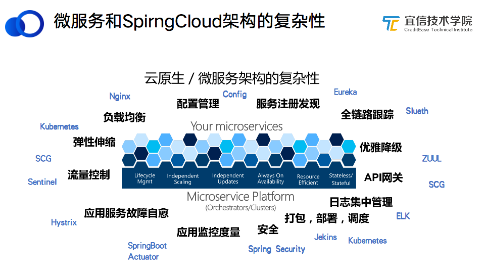
微服务和SpirngCloud的架构是比较复杂的，如配置管理、服务注册与发现、API网关、打包部署调度、安全、服务故障自愈、流量控制和弹性伸缩等非功能需求，都是微服务需要包含的架构模块。上图中蓝色字表示SpirngCloud、Kubernetes等用来解决云原生和微服务架构问题的技术方案。
从图中可以看出微服务架构的复杂性，要想实现一套微服务架构来支撑和交付业务，需要在底层封装很多基础组件，构建一套底层基础架构来隔离底层的非功能需求，做到让业务系统无感知、平滑地对外提供服务。
三、宜信微服务架构和SIA网关的4种模式
SpringCloud提供的框架或基础设施是一个半成品，我们在SpirngCloud的基础上进行了二次开发，抽象和封装了一些微服务架构的通用基础设施平台，不同的业务团队共享这些基础设施，降低技术学习和接入成本，让业务团队更专注于业务逻辑的实现，聚焦业务开发。
3.1 宜信微服务架构
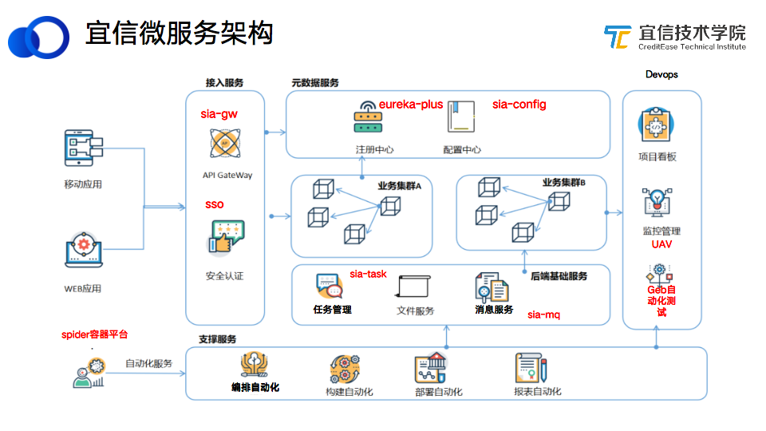
上图所示为宜信的微服务架构：
- 微服务网关，sia-gateway使用了去中心化的网关接入方案。
- 元数据服务层，用Eureka-plus和sia-config对注册中心Eureka和配置中心做了增强与优化。
- 任务管理，基于微服务的思想，开发和开源了微服务任务调度平台SIA-TASK。
- 容器平台，实现了快速的自动化构建、部署和服务编排。
- DevOps，微服务的交付频率、速度比较快，需要有持续集成、持续开发工具和手段来保障项目质量和服务正常运行，对此我们有自研的UAVStack监控系统、自动化测试系统等工具链。
3.2 SIA微服务网关架构
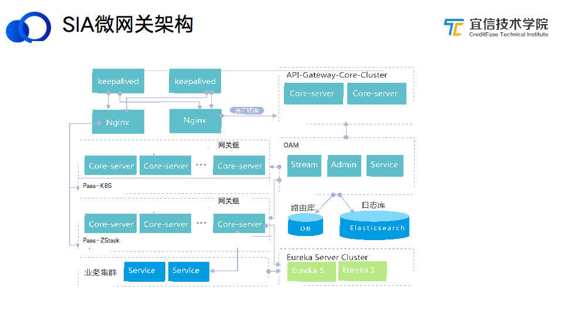
有别于其他的架构模式，微服务架构里出现了一个重要的基础设施变化-增加了微服务网关模块。网关主要解决的问题是：服务拆分之后，每一个服务粒度都比较小，服务之间的交互会呈现网状的结构，需要一个聚合的节点来聚合这些微服务。
因此我们在SpringCloud微服务架构的基础上二次开发出SIA微服务网关，如图所示，重点介绍其中的2个核心模块：
- 网关组，网关组里封装了两种网关：同步网关和异步网关。
- OAM，自助式网关管理平台，所有业务节点的生命周期管理都通过这个模块来进行。
3.3 SIA微服务网关的4种模式
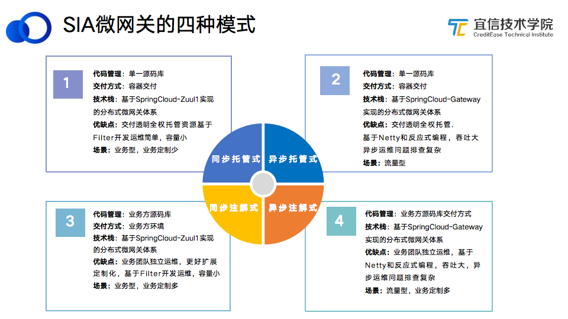
SIA微服务网关的4种模式：同步托管式、同步注解式、异步托管式、异步注解式。
1）同步托管式
采用单一源码库进行代码管理，交付方式是容器交付，去中心化的设计。目前大部分生产环境和业务都采用同步托管模式。
- 优点：网关交付对业务方完全透明；只要在容器平台申请一个网关资源，就可以得到网关服务；基于Filter开发运维简单，容量小。
- 缺点：定制化不够强。
2）同步注解式
在跟业务团队对接时，我们发现很多业务系统已经实现了一些独特的业务逻辑，难以迁移到网关，所以我们采用一种比较兼容的注解的方式去适应这些业务逻辑，在原有项目的基础上加一个注解，将它们纳入到整个网关管理体系中来。同步注解式是基于SpringCloud-Zuul 1实现的分布式微网关体系，管理业务方源码库，根据业务方环境进行交付。
- 优点：对项目的控制力比较强，业务团队独立运维，支持扩展定制化；基于Filter开发运维简单，容量小。
- 场景：业务定制化场景比较多。如果要加载初始化、加大资源，或对业务的Filter拦截机制有定制化需求，都可以用同步注解模式。
SpringCloud和Zuul使用的后端技术是基于Servlet，其线程处理模型是一个请求对应一个线程，当请求量过多，线程栈溢出，就会占用非常多的资源，导致网关无法提供额外的线程资源来处理新进来的请求。因此我们采用了SpringCloud自研的SCG技术方案。
SpringCloud-Gateway基于Netty和反应式编程模式，采用收敛式的线程处理模型，只要用少数线程就可以处理高并发的流量请求。目前已经实现了基于SpringCloud-Gateway的异步模式，当同步模式在线上运行过程中出现资源透支的情况，就选择使用异步模式。异步模式也分为2种：异步托管式、异步注解式。
3）异步托管式
通过单一源码库进行代码管理，采用容器交付。主要使用场景是流量型，如果业务多对高并发、高吞吐场景，建议使用异步托管式。
4）异步注解式
如果想在异步网关基础上做定制开发，可以使用异步注解的模式。
网关的4种模式来源于业务的需求：为兼容业务已有逻辑演进出注解模式；当出现性能瓶颈、资源浪费时，采用异步模式应对高并发流量。
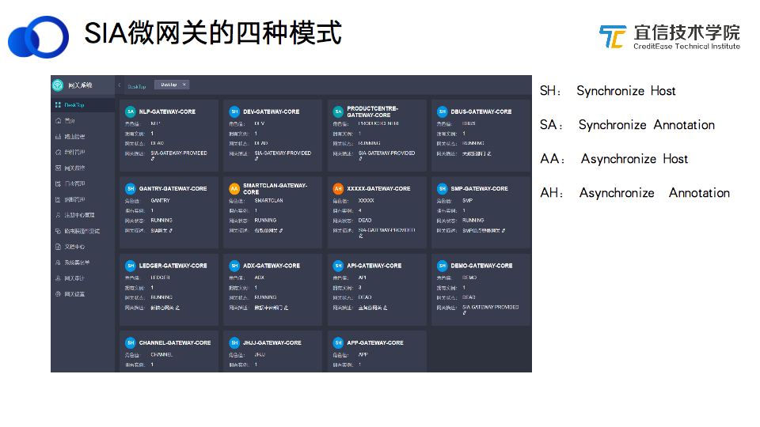
上图是网关测试环境的一个截图， 包括上述4种模式。每一个小方格代表业务的一个网关组，方格中的小圆圈代表它属于哪一种网关。业务系统在选择网关模式时要做一个判断：诉求是支持业务的快速集成，还是对流量有一定要求。
3.4 SIA微网关的核心Feature
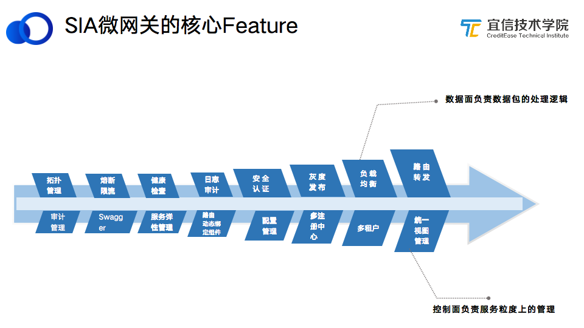
如图将SIA微网关的核心Feature分成2个层面：
- 数据面，负责数据包的处理逻辑。路由转发、负载均衡、灰度发布、日志审计、熔断限流等都是从数据层面对流量进行管理。
- 控制面，负责服务粒度上的管理。统一视图管理、多租户管理、注册中心、配置管理、路由组件绑定等是从控制层面来保障和管理服务。
3.5 SIA微网关对微服务的生命周期管理
微服务网关贯穿了整个微服务生命周期的管理。
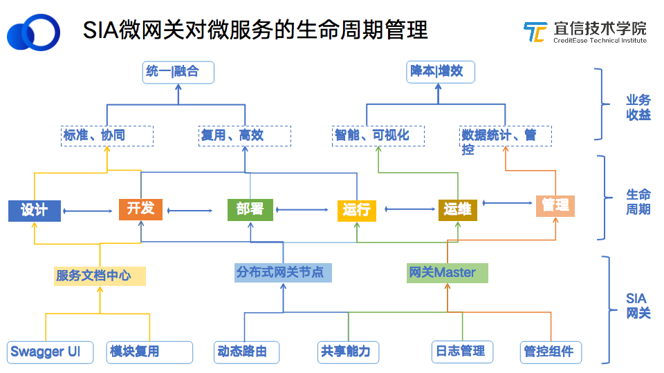
SIA微服务网关的功能包括：
- Swagger UI、模块复用对应服务文档中心模块的功能。
- 动态路由、共享能力集中在分布式网关节点。
- 日志管理、管控组件是网关Master提供的功能。
各功能模块对应的生命周期：
- 服务文档中心，对应整个软件生命周期的初期开发和设计阶段，网关提供一个个统一的API视图，前端和后台可以通过Swagger UI来联调开发。
- 分布式网关节点，在开发和部署阶段会涉及到一些共享能力的部署和运行。
- 网关Master，在运维阶段通过自动化运维提高运维效率；在管理方面，提供数据统计的功能，生成数据报告用于管控。
SIA微服务网关作用于软件生命周期的各个阶段，通过标准协同、业务测试/前端后端沟通、服务模块复用、可视化管理、数据统计管控等实现业务的统一融合、降本增效。
3.6 总结：微服务架构与中台&后台
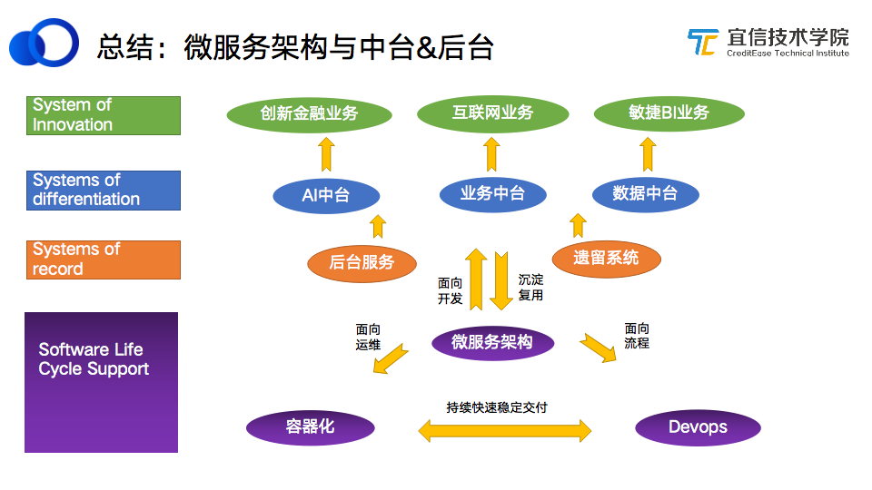
2016年，Gartner 发布了一个关于应用变化速率的报告《Pace-Layered Application Strategy》，以应用变化速率为标准将业务应用分为三层：
- SOI-敏态业务：比如互联网业务，需求变更快，要求快速迭代 、快速交付。
- SOR-稳态业务： 比如传统业务，变更周期⻓、变化频率低、变化成本高、变化⻛险高。
- SOD-中台业务： 齿轮匹配失衡，中台就像是在前台与后台之间添加的⼀组“变速⻮轮”，将前台与后台的速率进行匹配，提升⽤户响应力。
中台的目标是围绕业务组织进行可复用能力的有机整合，协助业务落地实施、改造、试错、转型，提升组织效率，降低系统成本。
中台和微服务有什么关系呢？微服务架构是面向开发的架构，很多基础服务可以沉淀到微服务架构里，同时，微服务架构把中台的能力快速释放出来，满足敏态业务快速变更的业务需求。
四、应用场景及典例分析
4.1 分解&聚合
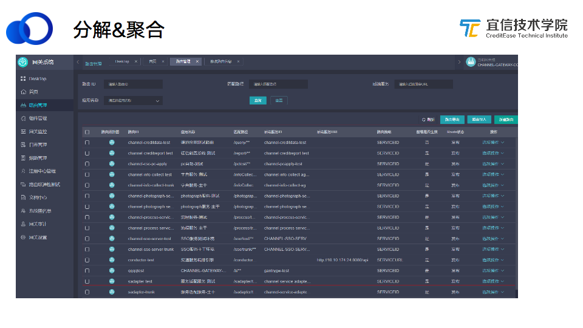
上图是路由管理里的一个截图，当一个大的单体或不同的服务要对外提供统一服务时，可以把服务聚合到网关上；同时一个巨型应用也可以通过网关分解成微服务。
4.2 复用&个性化
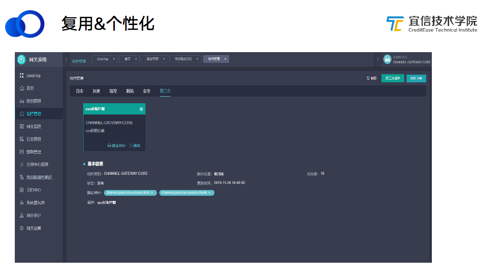
微服务架构中有很多非功能需求，或者说是技术导向型的需求，包括日志管理、限流、蓝绿部署、版本管理等，可以通过组件的方式下沉到网关上，业务系统通过将服务与组件绑定实现对组件功能的复用。
我们还提供了一个插件机制，当业务有独特的需求，可以根据其业务逻辑在网关上进行功能的个性化定制。
4.3 API&契约

在开发或前后端联调时，前后端可以通过网关服务文档中心的Swagger UI功能模块访问后端服务调用接口的分析。
只要在后端服务之上加一个Swagger注解，网关就可以把所有对外暴露的服务抓取出来，这相当于是一种契约式的开发。
4.4 容错&保护
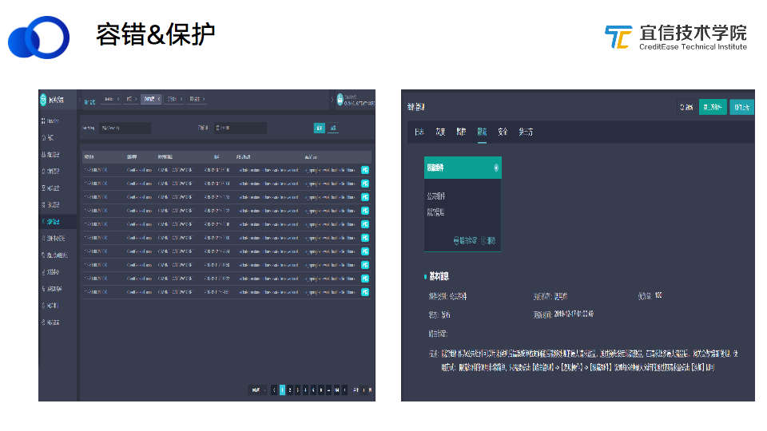
我们对网关应用做了容错和保护机制，当然这也是SpringCloud本身自带的一个技术模块，我们的容错机制是基于SpringCloud的Hystrix实现的，当发现后端服务调用请求一直在返回错误时，会开启熔断，避免由于一直发送错误请求导致雪崩的情况发生。
除此之外，我们还会采用Guava限流的方式对服务进行保护。在大促或秒杀的场景下，会有大量请求进来，这时会通过限流来保护服务的稳定。
4.5 监控&治理
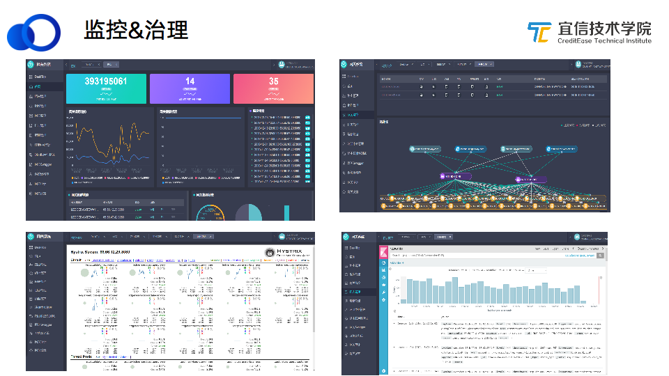
宜信微服务架构平台有一个很重要的功能是网关服务运行状态和后端连接状态可观测，提供了很多监控方面的功能组件，如图所示，可以统计当前请求的频率、服务健康度。
预警方面重点介绍网关拓扑图。当请求失败，当前链路出现异常，通过网关拓扑图可以快速跟踪和判断业务系统哪个节点出现问题，然后对有问题的节点进行摘除或其他操作。
我们的网关运行在Docker平台上，Docker平台在出现问题或重启之后日志会丢失，我们的日志系统会把日志归集，存储到ES中，便于对历史日志溯源。
4.6 统计&分析
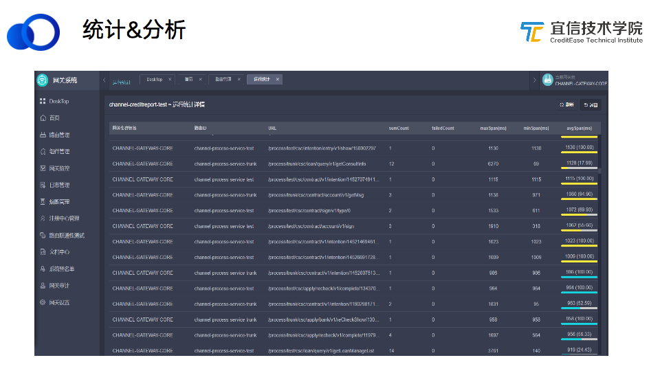
网关中有一个组件叫“监控统计”，这个模块默认是不打开的，如果你想对请求做延时，或者想看请求的明细调用情况，可以通过组件管理中打开这个组件，对容器的请求做统计和分析。监控统计组件会对当前请求的最大延迟、最小延迟、失败个数、平均延迟进行排序，一目了然。
五、微服务化架构建设遇到的问题
5.1 设计初期的问题
1）如何隔离业务网关，同时有统一的管理视图？
构建微服务网关初期，业务同事比较关注我们的业务网关和别人的网关是否存在耦合问题，他的业务请求是否会影响到我。我们选用去中心的网关设计方式，同时通过OAM实现对所有网关节点的统一管理。
2）平台型系统建设初期是否要考虑同步异步网关融合？
我们的微服务网关是按照DDD领域驱动模式来建设的，没有把网关绑定在某一个特殊的技术实现上，而是把它作为一个抽象封装来统一管理后端的节点，如果换一种技术实现也不会影响到前端业务的正常工作。因此在架构建设初期要考虑清楚你的业务系统和后端技术架构之间是否解耦。
5.2 使用开源方案的问题
3）开源系统本身的bug
虽然每一种开源方案在开源之前都经过了长时间的考验，但其实依然可能存在bug，基于这些开源方案进行二次开发时仍可能遇到一些坑，我们会不断对开源系统进行bug修复和功能增强。
4）系统的性能问题
Zuul本身存在性能瓶颈，当出现性能问题时，我们考虑是不是要用线程收敛的模式来增强网关的性能。
5.3 上线生产运维方面的问题
5）如何克服Eureka注册中心的CAP问题？
在网关应用中会遇到Eureka的CAP问题，因为Eureka消息注册以可用性（Availability）优先，在一致性（Consistency）上相对较弱。为解决这个问题，我们基于Eureka的特点提供SynchSpeed服务，如果业务需要保证状态一致性，可以开启这个服务。
6）SpringCloud与SpirngBoot不同版本的兼容问题？ K8S平台与微服务注册中心状态同步？
这两个问题是指当云容器平台的状态发生变更，却没有及时通知到注册中心，导致服务在两个平台的状态不一致，这就需要做上下文关联系统（StakeHolder）的整合。
内容来源：宜信技术学院第8期技术沙龙-线上直播|宜信微服务架构落地及其演进
主讲人：宜信高级架构师 & 宜信科技中心基础研发部SIA微服务网关负责人王佩华